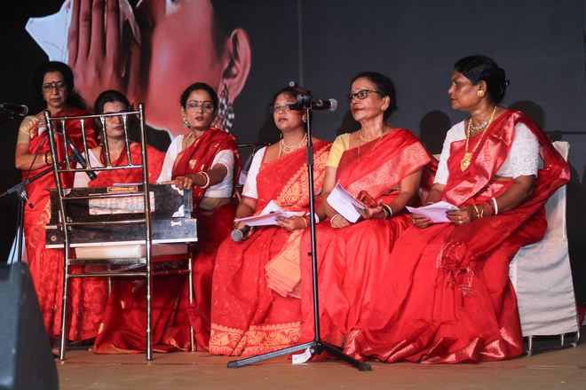
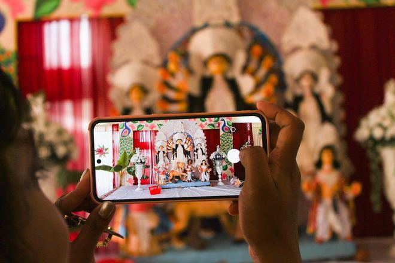
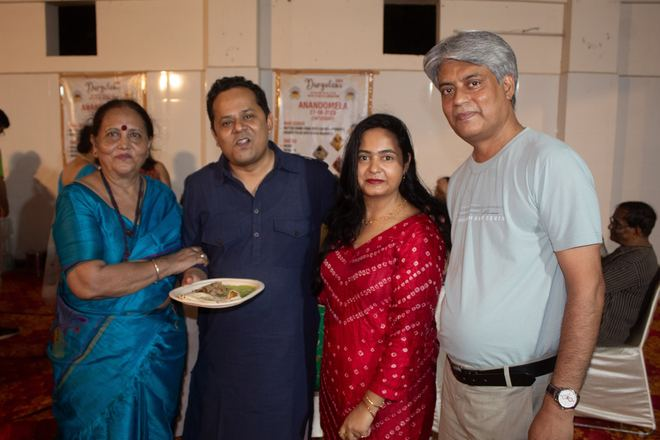
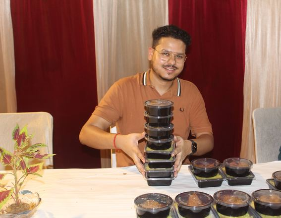
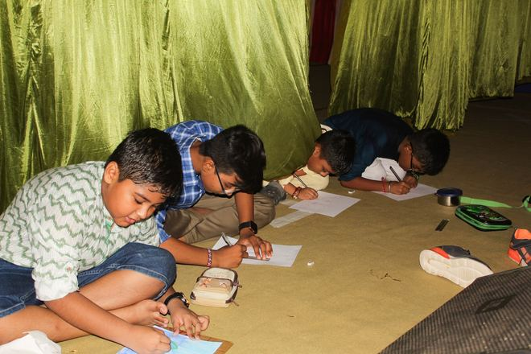
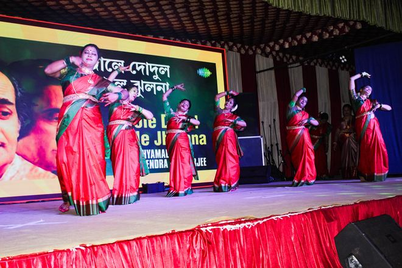
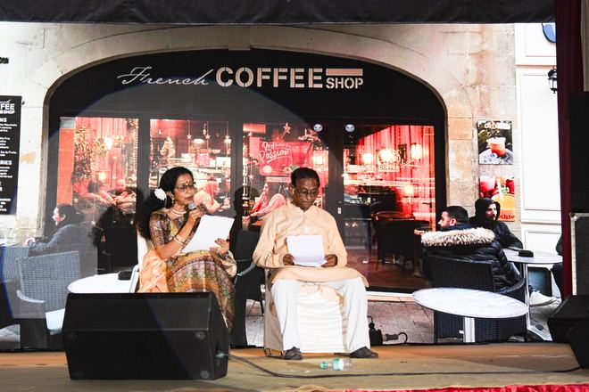
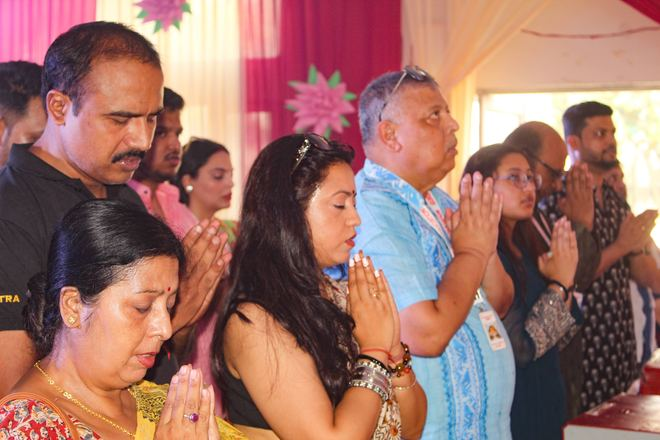
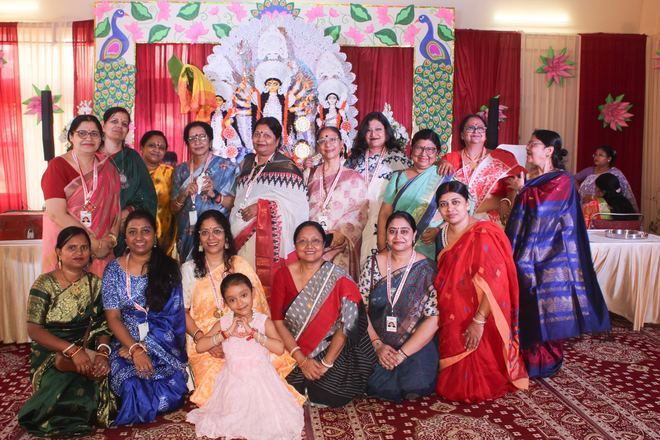
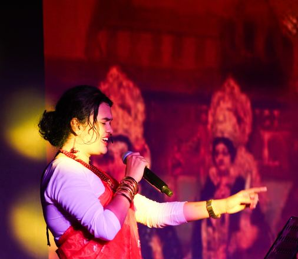
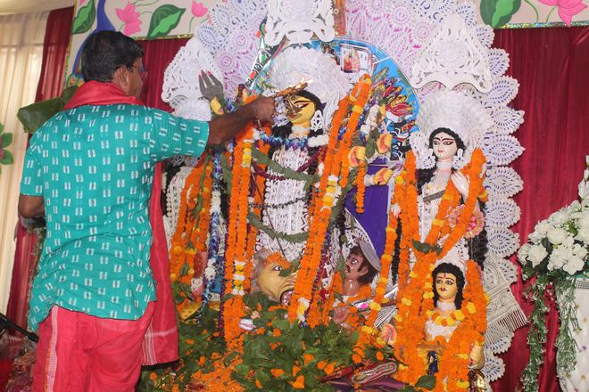
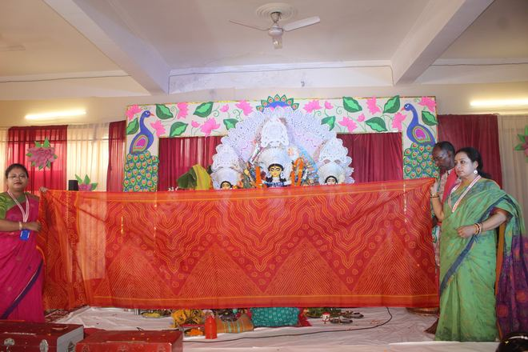
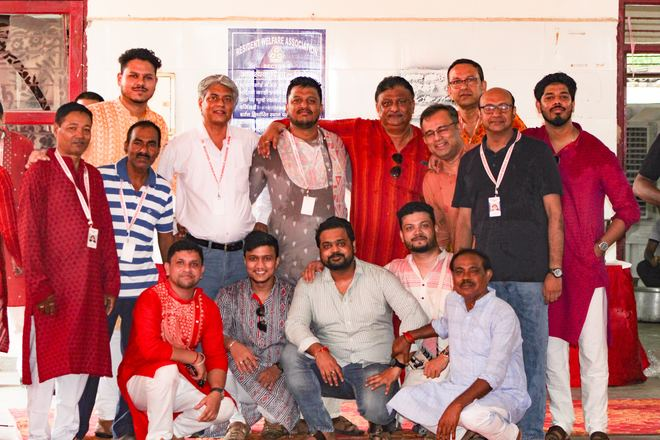
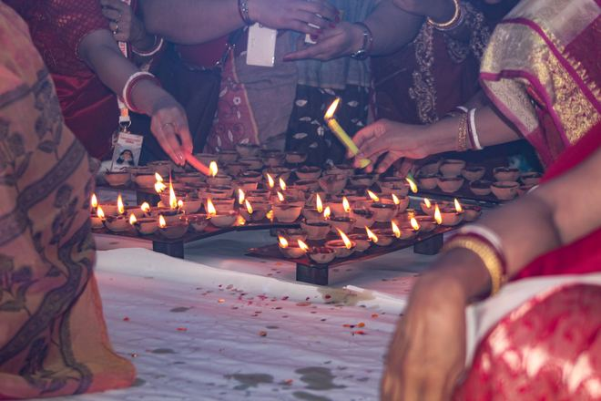
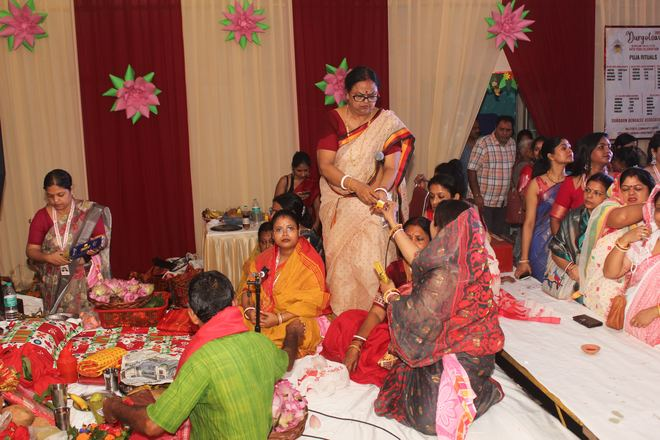
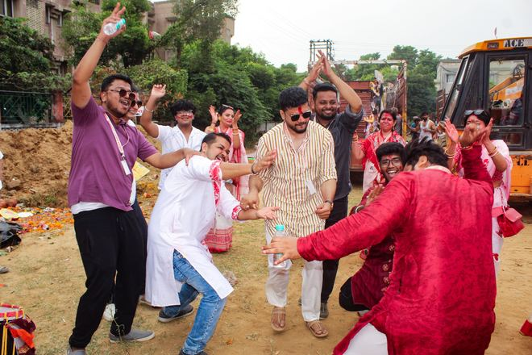
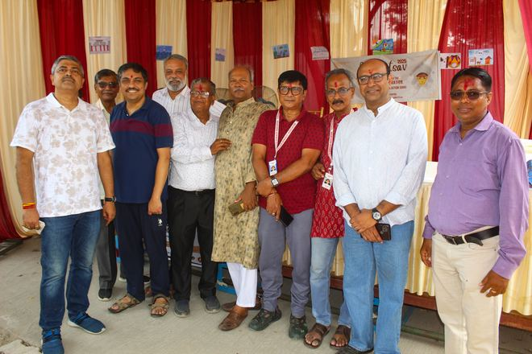
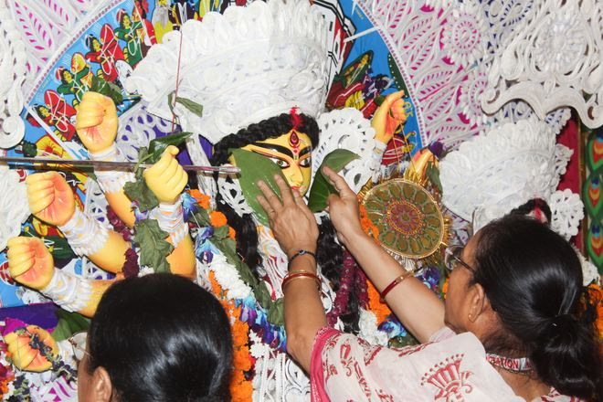
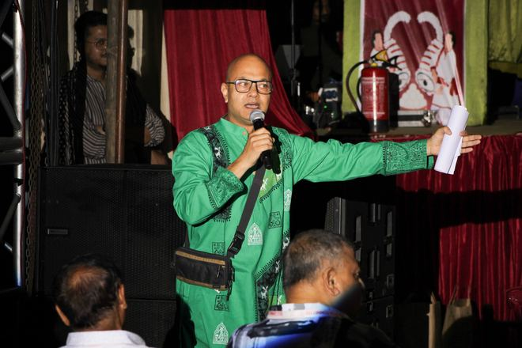
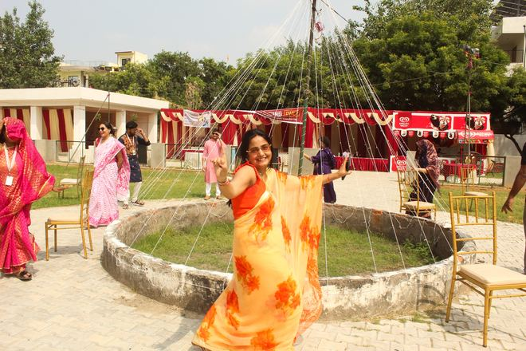
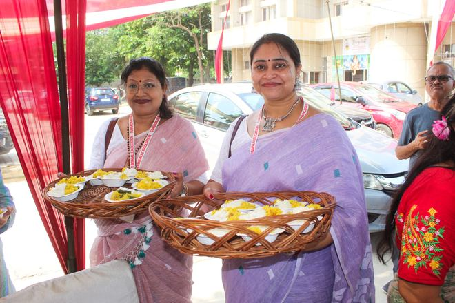
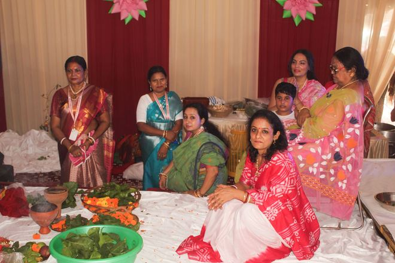
Pandal open day and night, Panchami to Dashami
Available at the venue for all visitors
For everyone, with no extra charge
No membership needed, Dhunuchi naach included
Timings, cultural programme and bhog for every day of the festival.
Come for a ritual, a meal, a performance or all three. Here is when to be there for each.
The morning puja runs from Shashthi to Navami. Pushpanjali is offered between roughly 8:30 and 11:00 AM, depending on the day.
Exact times for each day →Monday 19 October, 10:28–11:16 AM. The most significant moment of the festival, so allow yourself time to settle in before it begins.
What is Sandhi Puja? →Free for everyone from Shashthi to Navami. Serving times will be announced closer to the festival, and each day's menu is on the schedule.
See the daily menu →Sandhya Arati at 7:00 PM, then the cultural programme from 7:30 PM. It wraps up between about 9:45 and 10:45 PM, depending on the day.
Evening programme by day →Maha Panchami, Thursday 15 October, from 7:00 PM: the Ananda Mela food fiesta kicks off the festival.
See the Ananda Mela menu →Wednesday 21 October: Maa Durga Boron from 9:30 AM, Sindoor Khela 10:30–11:30 AM, immersion 3:00–5:00 PM (the slot is set by JPC and may differ) and Shanti Jal at 8:00 PM.
Dashami schedule →HUDA Community Center, Sector 9, Gurugram. Free parking is available at the venue for all visitors.
Get Directions New to Durga Puja? Traditions explainedGurgaon Bengalee Association organises Gurugram's oldest Durga Puja, a tradition that began in 1982 and has grown alongside the city itself. What started as a small gathering of Bengali families has become one of the most anticipated cultural celebrations in the region, bringing together devotion, music, theatre and community spirit over six days of festivities.
Dates as per the Bengali Panchang and subject to final confirmation closer to the festival. Have a question? Check our FAQ →
Venue: HUDA Community Center, Sector 9, GurugramOrganising Gurugram's oldest Durga Puja is a community effort, made possible by generous sponsors and donors each year. If you'd like to contribute — whether through sponsorship or a donation — we'd love to hear from you.
Become a SponsorPushpanjali is offered every morning from Shashthi to Navami, following each day's auspicious timing. See the day-wise schedule for exact times.
Free bhog is served to everyone across all six days — no cost, no membership required. Serving times announced closer to the festival.
Parking is available for all visitors at the venue — no restrictions.
Visit our FAQ page for answers on rituals, visiting tips, and everything else about GBA's Durga Puja.
Whether you're a long-time member or new to Gurugram, everyone is welcome to be part of our Durga Puja celebrations.
Get in Touch See Full Schedule